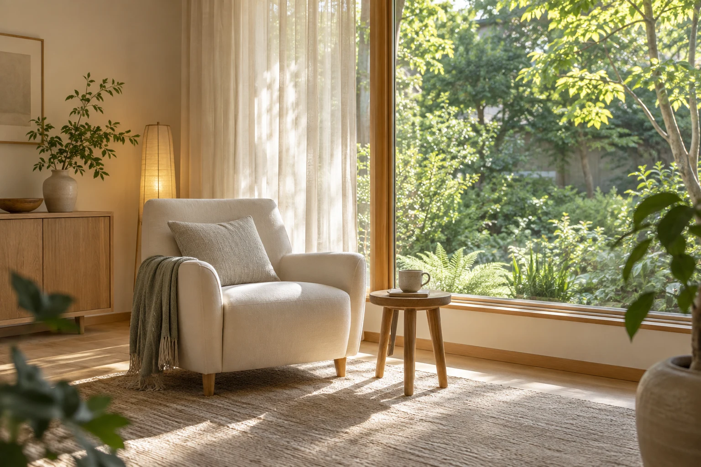
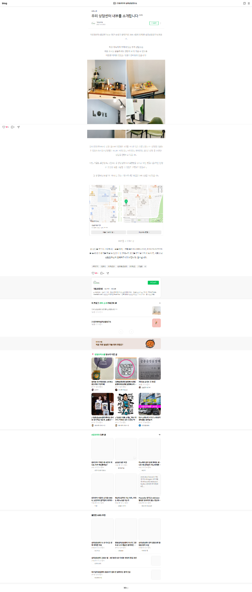

SPACE01
작고 아늑한 공간,
편안한 첫 만남
처음 방문하는 분들도 편안히 머물 수 있도록 꾸민 공간입니다. 블로그에서는 차와 다과가 준비된 코너, 대기 공간과 상담센터 내부를 소개합니다.
블로그에서 공간 살펴보기 ↗마음을 위한, 온전한 시간
말로 다 꺼내지 못한 마음까지.
지금의 당신을 이해하는 시간,
(T)트라우마심리상담연구소가 함께합니다.

마음을 여는 일,
편안함에서 시작합니다.
COUNSELING PROGRAMS
마음의 어려움은 저마다 다르니까.
지금 필요한 이야기를 함께 찾아보세요.
OUR APPROACH
트라우마를 겪은 마음이
안전하게 이야기를 시작할 수 있도록.
(T)트라우마심리상담연구소는 트라우마를 경험한 분들의 정서적 안정과 회복을 위한 전문 상담을 제공합니다. 트라우마 관련 전문성을 갖춘 상담사가 각자의 경험과 필요를 살피며 개인에게 맞는 상담을 진행합니다.
다양한 트라우마 상담 기법을 바탕으로, 안전하고 편안한 환경에서 일상과 삶의 질을 돌아보는 시간을 함께합니다.
블로그에 소개된 주요 약력
YOUR FIRST STEP
상담은 보통 이렇게 시작됩니다.
구체적인 절차는 센터에 확인해 주세요.
궁금한 점과 희망하는 상담 분야를 먼저 확인합니다.
가능한 시간과 상담 방식, 비용을 안내받습니다.
지금의 고민을 나누고 상담에서 원하는 것을 이야기합니다.
상담 목표와 진행 방향을 함께 논의합니다.
QUESTIONS & ANSWERS
첫 상담을 앞두고
궁금할 수 있는 이야기들.
처음부터 이야기를 정리해 올 필요는 없습니다. 상담에서 무엇을 말해야 할지 모르겠다는 마음부터 이야기해도 괜찮습니다.
꼭 한 가지로 정하지 않아도 됩니다. 고민이 여러 가지이거나 구분하기 어렵다면 첫 문의에서 적합한 상담 분야를 확인해 보세요.
상담 유형과 진행 방식에 따라 다를 수 있습니다. 전화 문의 시 비용, 소요 시간, 운영 시간과 변경·취소 기준을 확인해 주세요. 010-2340-7220으로 문의하실 수 있습니다.
상담을 시작하기 전에 비밀보장의 범위와 예외 상황, 기록 관리 방식을 설명받고 확인해 주세요. 구체적인 운영 정책은 해당 센터에 문의할 수 있습니다.
WHEN YOU ARE READY
첫 문의에서는 상담 분야와 가능한 일정부터 확인해 보세요.
010-2340-7220방문 전 전화로 상담 가능 일정과 비용을 확인해 주세요.COME & MEET US
대구 수성구에서 시작하는
나를 위한 시간.
A WARM WELCOME
대구 수성구 동대구로 386에 자리한 작고 아늑한 상담 공간입니다. 차와 다과를 준비해 처음 방문하는 분들을 맞이합니다.
연구소 오시는 길 ↗
LIFE AT THE CENTER
편안한 공간에서의 만남부터
학교와 집단에서 함께한 시간까지.
처음 방문하는 분들도 편안히 머물 수 있도록 꾸민 공간입니다. 블로그에서는 차와 다과가 준비된 코너, 대기 공간과 상담센터 내부를 소개합니다.
블로그에서 공간 살펴보기 ↗학교 방문 강의에서 학교폭력과 시험불안 등 감정을 다루는 방법을 함께 살폈습니다. 역할극에 직접 참여하며 대처 방법을 배워보는 시간도 가졌습니다.
조각 그림을 함께 완성한 크리스마스 협동 미술 활동입니다. 서로 다른 표현을 존중하고 감정을 나누며, 협력하는 경험을 함께했습니다.
활동 기록에 소개된 프로그램의 현재 운영 여부와 참여 방법은 전화로 문의해 주세요.